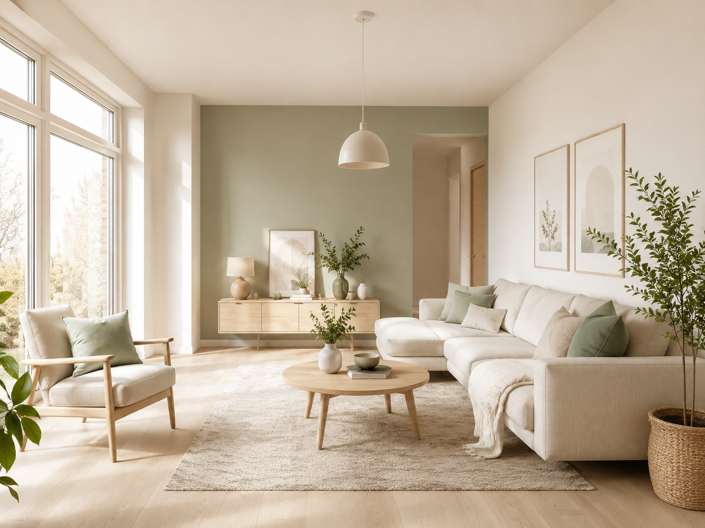
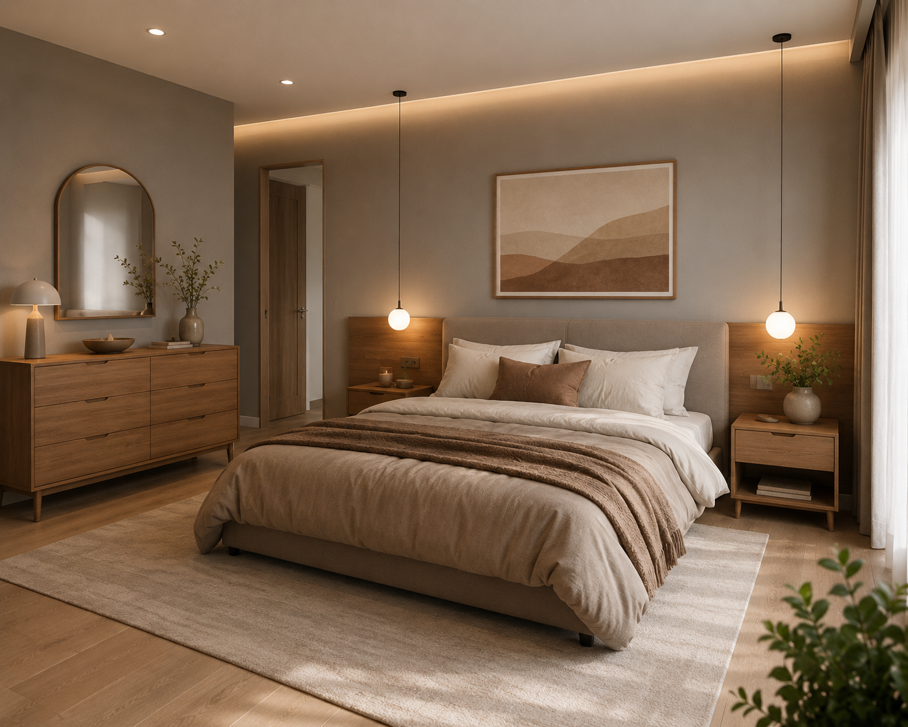
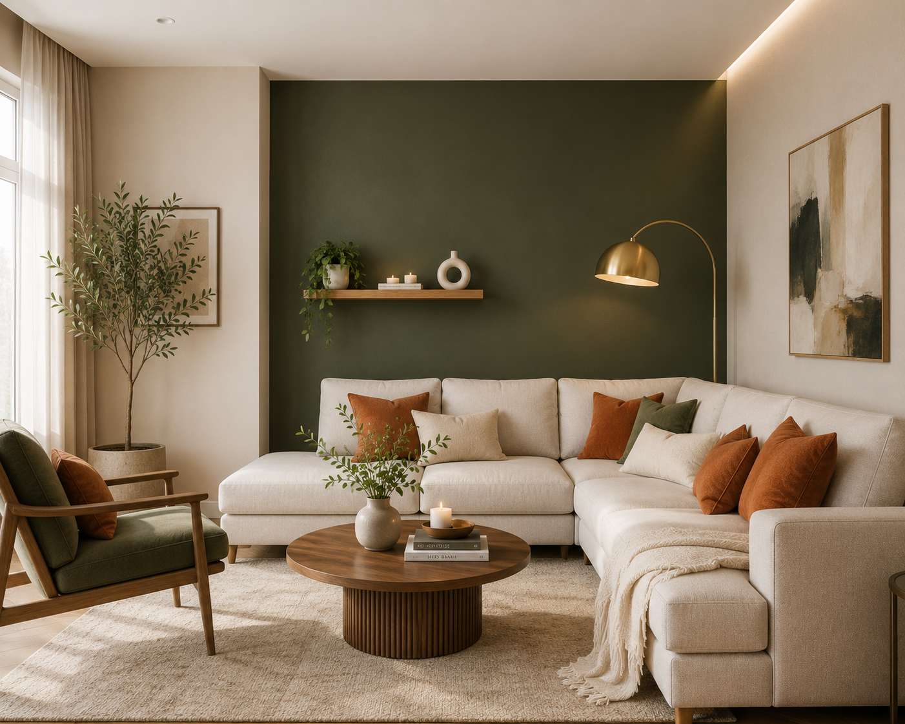
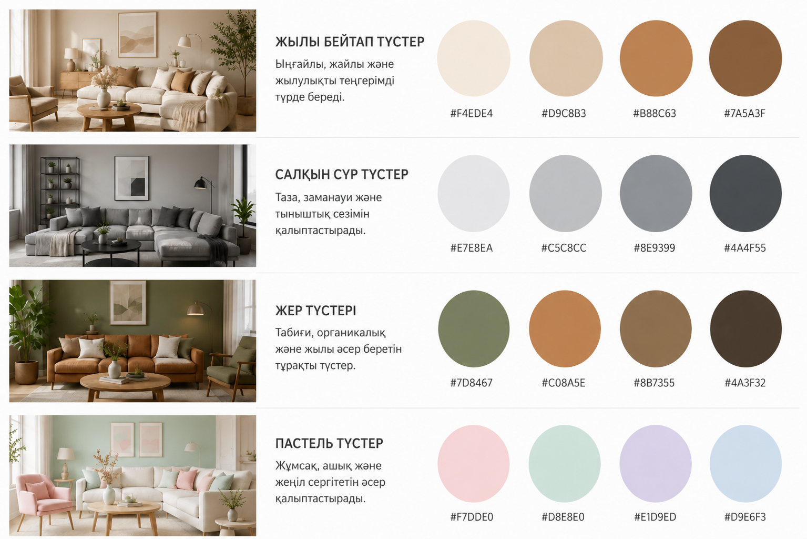
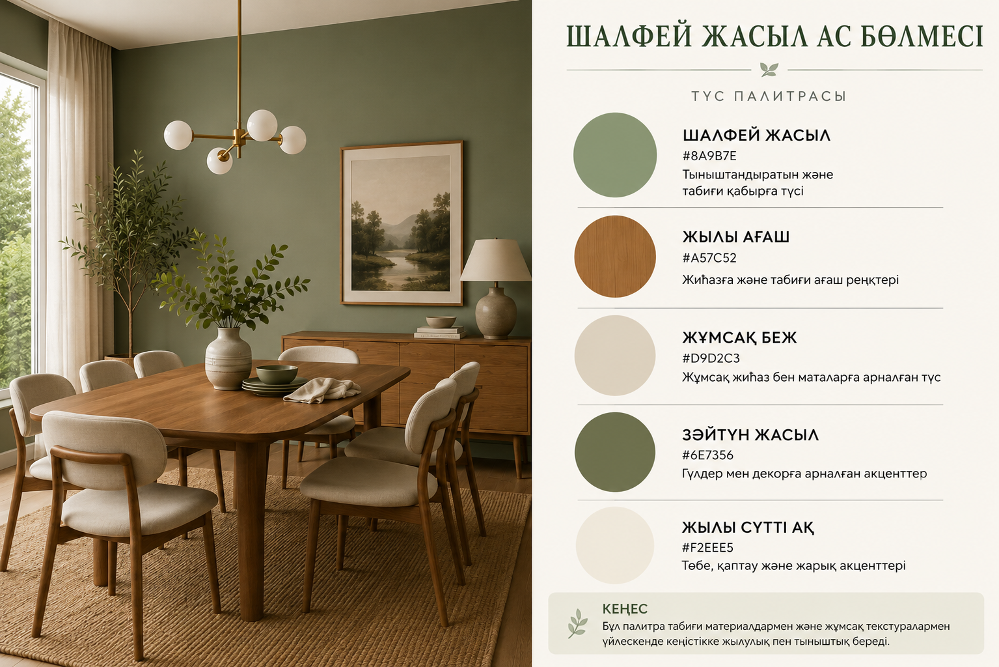
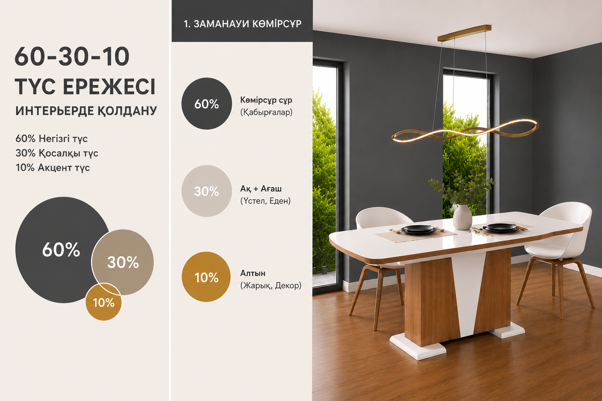
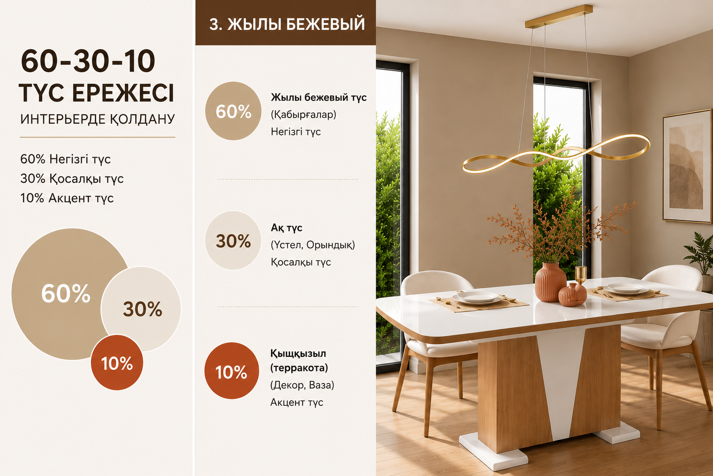

Қалай дұрыс түс таңдау керек?
Үйді немесе жұмыс кеңістігін безендіру кезінде түс таңдау маңызды рөл атқарады. Дұрыс таңдалған реңктер интерьердің жалпы көрінісін жақсартып қана қоймай, кеңістіктің атмосферасын, жарықтылығын және адамның көңіл-күйін қалыптастырады.

Ақ, крем, ашық беж және нәзік пастель реңктері кеңістікті визуалды түрде үлкейтіп, жарығырақ көрсетеді. Олар табиғи жарықты жақсы шағылыстырады және интерьерге тазалық пен жеңілдік сезімін береді.
- Бөлмені кеңірек көрсетеді
- Табиғи жарықты арттырады
- Кез келген жиһазбен үйлеседі
- Скандинавиялық стильге қолайлы

Сұр, сұр-жасыл, құм түсті және жұмсақ жер реңктері интерьерге тепе-теңдік пен үйлесімділік береді. Олар ұзақ уақыт сәннен шықпайды.
- Көзді шаршатпайды
- Интерьерге талғампаздық береді
- Түрлі стильдермен үйлеседі
- Акцент түстер үшін мінсіз негіз

Акцент түстер интерьерге мінез бен ерекшелік береді. Олар әдетте бір қабырғада немесе белгілі бір аймақты ерекшелеу үшін қолданылады.
- Кеңістікке даралық береді
- Белгілі бір аймаққа назар аударады
- Интерьерді жандандырады
- Заманауи дизайнда ерекше әсер қалдырады
🎨 Түстер үйлесімі
Үйлесімді түстер интерьердің сұлулығын арттырып қана қоймай, кеңістіктің көңіл-күйі мен атмосферасын қалыптастырады. Дұрыс таңдалған палитра бөлменің барлық элементтерін бір-бірімен байланыстырып, тұтас әрі сәнді көрініс береді.

NOVA 2024 коллекциясында әртүрлі стильдерге арналған дайын палитралар жинақталған. Скандинавиялық минимализмнен бастап заманауи классикаға дейінгі түстік шешімдерді зерттеп, өз үйіңізге сәйкес келетін үйлесімді таңдаңыз.

💡 60–30–10 қағидасы
Ең үйлесімді интерьер жасау үшін кәсіби дизайнерлер 60–30–10 қағидасын ұсынады:
Қабырғалар
Жиһаз, перде
Декор, аксессуар


Visualizer құралын пайдаланып, таңдалған түстердің нақты кеңістікте қалай көрінетінін алдын ала қарап, өз үйіңіз үшін ең сәтті үйлесімді таба аласыз.